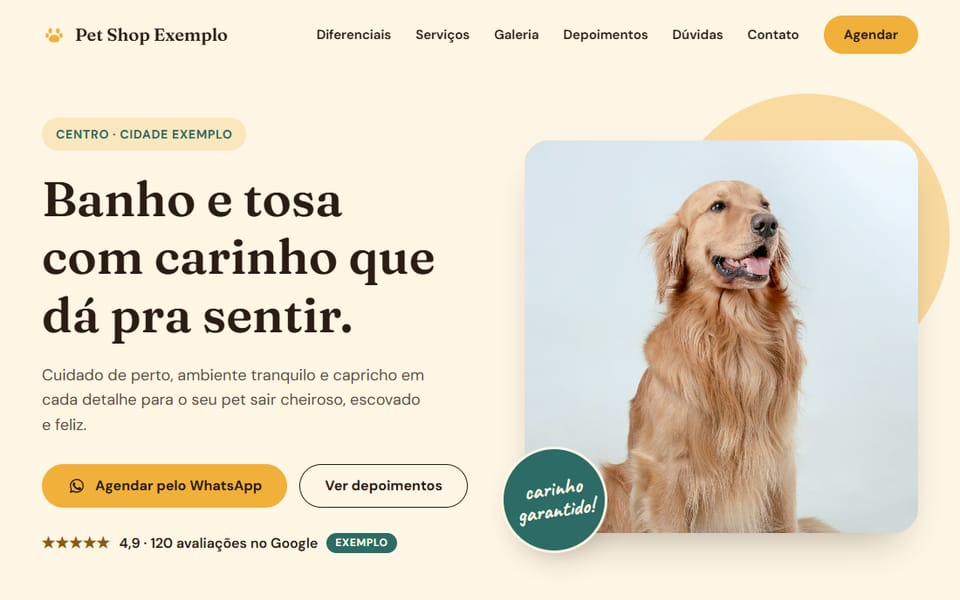
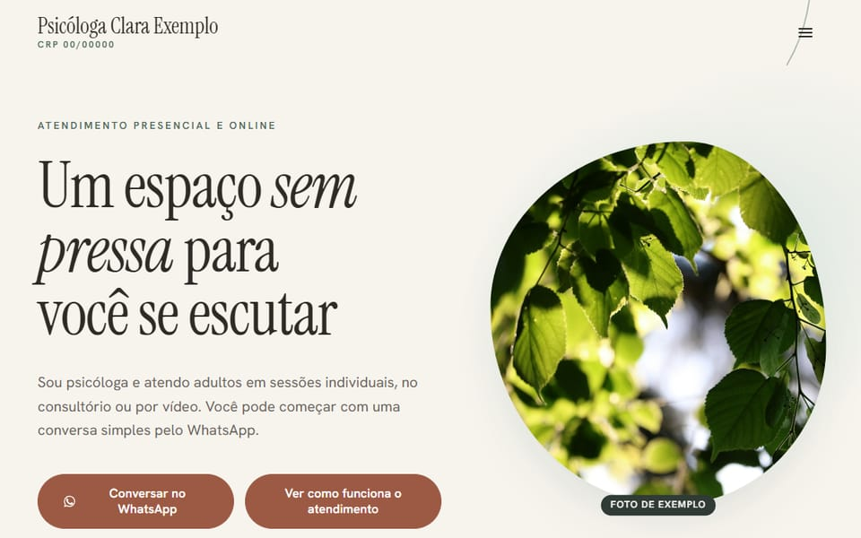
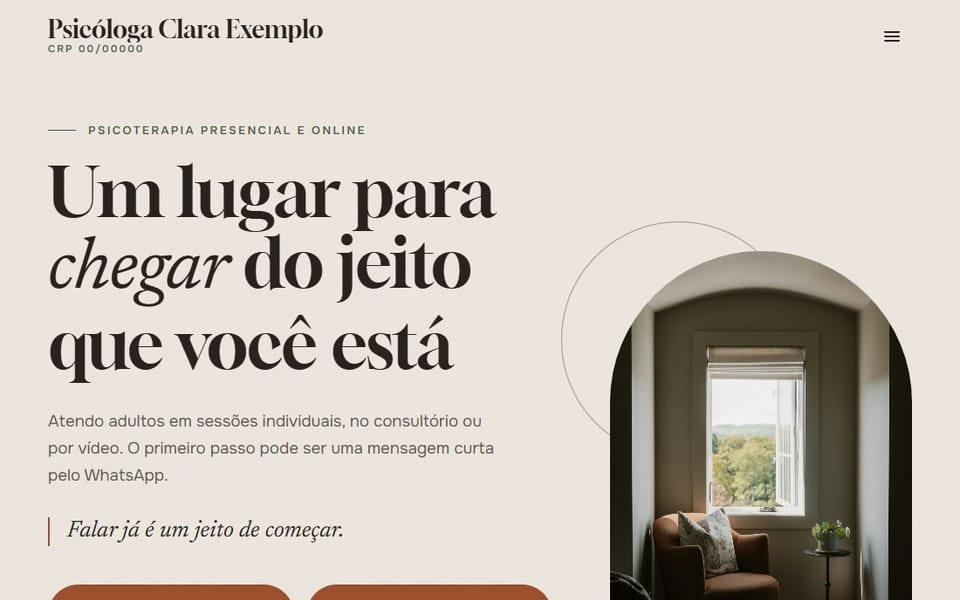
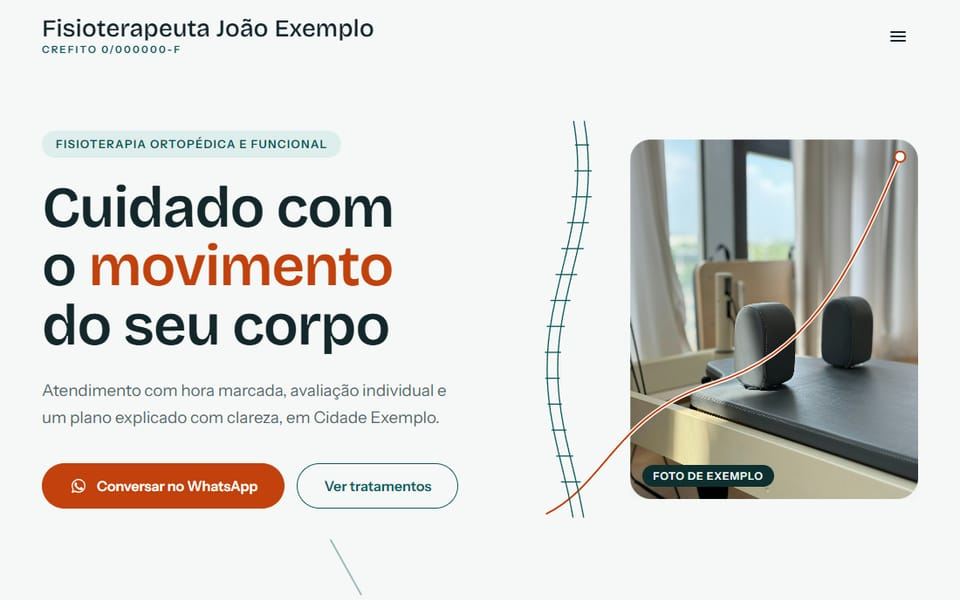
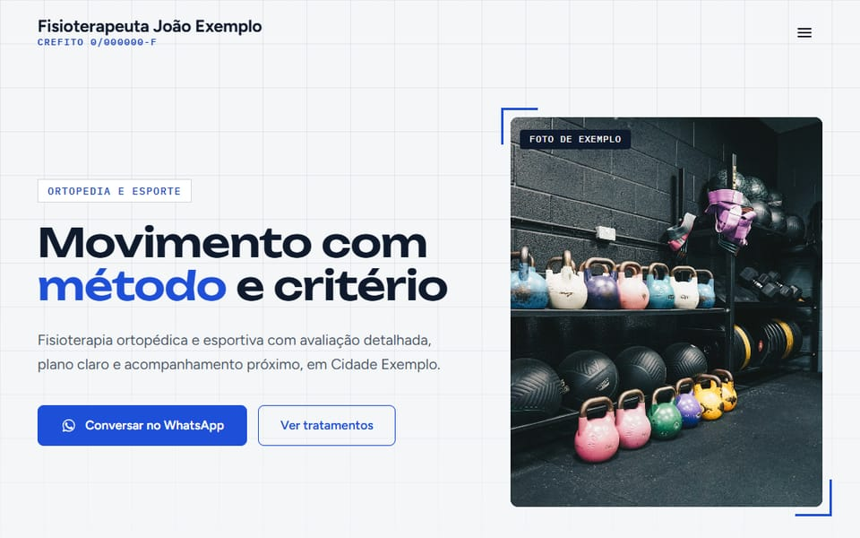

Pet shop
Acolhedor
Exemplo de landing page para pet shop (estilo Acolhedor), com dados fictícios. É um modelo de demonstração, não um site real.
Seu Nome Exemplo
Exemplos de landing pages para pet shop, psicologia e fisioterapia. Veja as demonstrações e chame no WhatsApp. Todos os dados das demonstrações são fictícios.
Falar no WhatsApp com Seu Nome Exemplo (abre em nova aba)
Pet shop
Exemplo de landing page para pet shop (estilo Acolhedor), com dados fictícios. É um modelo de demonstração, não um site real.

Psicologia
Exemplo de landing page para psicologia (estilo Serena), com dados fictícios. É um modelo de demonstração, não um site real.

Psicologia
Exemplo de landing page para psicologia (estilo Acolher), com dados fictícios. É um modelo de demonstração, não um site real.

Fisioterapia
Exemplo de landing page para fisioterapia (estilo Movimento), com dados fictícios. É um modelo de demonstração, não um site real.

Fisioterapia
Exemplo de landing page para fisioterapia (estilo Ativa), com dados fictícios. É um modelo de demonstração, não um site real.